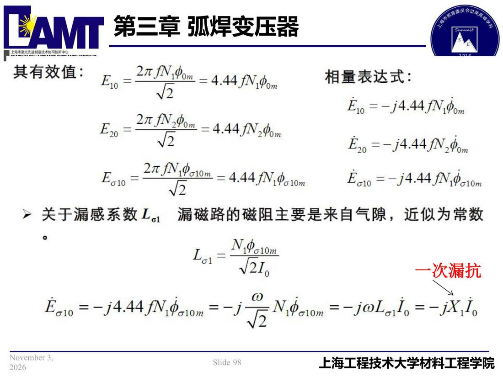

03 第3章 弧焊变压器/p098 一次漏抗
p098 一次漏抗
📄 原文：📄 弧焊电源 课件（PDF 第 98 页）（幻灯片 98/273；PDF 第 98 页）
一次漏抗

讲义原文
本页在课件中是纯图文版式（无文字层），内容以页图与下面的 OCR 文本为准。
本页标红（老师强调）
- 一次漏抗
页面文字（OCR 机读，可能有错字，以页图为准）
其有效值 E.o =2元/.fom =4.44/V.0om Eso =27/.8om =4.44/V20om =4.44/NV19a10m 相量表达式： ETo=-14.44fN1fom E20=-14.44fN2fom EG10=-14.44 fN.$c10m
关于漏感系数La1 漏磁路的磁阻主要是来自气隙，近似为常数 Lal= 一次漏抗 Ea1o=-14.44fN.$a1om=-j =-jOLaLo=-iX.L。